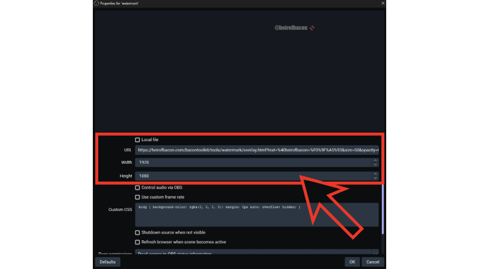
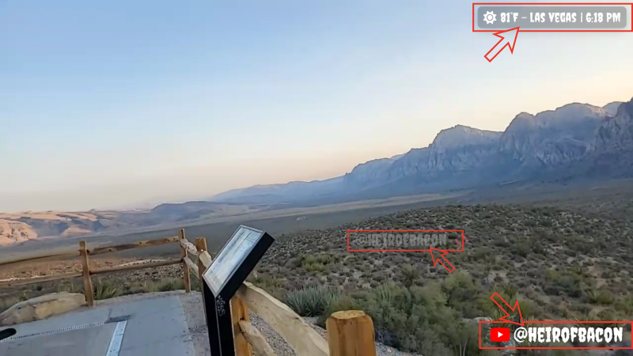

Welcome to the Toolkit
A collection of highly customizable, browser-based overlays for your live streams. Completely free, no accounts, no installations, and no server required.
How It Works
Unlike traditional overlays that require background software, these tools generate a customized URL string. All of your settings, colors, and text are saved directly inside that link.
- Select a tool from the sidebar.
- Tweak the settings, fonts, and colors to match your brand.
- Click the COPY button below the live preview.
- In OBS (or your streaming software), add a new Browser Source.
- Paste the URL, set the Width/Height to match your canvas (e.g., 1920x1080), and press OK.
Custom Google Fonts
Every tool in this kit supports dynamic Google Fonts. Instead of picking from a limited dropdown, you can type the exact name of any font available on Google's library into the "Font Family" box (e.g., Bebas Neue, Roboto, Anton, Creepster). The overlay will automatically download and apply the font in real-time.
Making Future Edits
Because your settings are saved in the URL, if you want to make a change later (like updating a social handle or changing a color), you don't need to recreate the overlay from scratch.
Load Existing Settings: Simply paste your old generated URL back into the URL box at the bottom of any tool. The editor will instantly reverse-engineer the link and restore all of your colors, fonts, and settings so you can continue exactly where you left off!

